pacman:: p_load(sf, spdep, tmap, tidyverse, sfdep)05-2: Local Measures of Spatial Autocorrelation
1 Overview
Local Measures of Spatial Autocorrelation (LMSA) deepen the analysis of spatial patterns by providing location-specific scores. These measures are mathematically connected to the global indices, such as Local Indicators of Spatial Association (LISA) and Getis–Ord’s Gi-statistics.
For detecting outliers and local clusters, we use LISA (Local Moran’s I) with distance-based or contiguity-based weights matrix. For identifying hot spots and cold spots, we use Getis-Ord Local Gi*, only with a distance-based weights matrix.
Results are only reliable if the input feature class contains at least 30 features.
Tasks for this exercise include:
Importing geospatial data (
st_read()from the sf package).Importing CSV files (`read_csv`` from the readr package).
Performing relational joins (
left_join()from the dplyr package).Computing LISA to detect clusters and outliers (
local_moran()from the spdep package).Computing Getis–Ord’s Gi for hot and/or cold spots (
local_gstar_perm()from the sfdep package).Visualising the outputs (
qtm()from the tmap package).
2 Getting Started
2.1 The Analytical Question
The main development objective for urban planners is to achieve equal development in the region. Through a case study of GPD Per capita (a development indicator)in Hunan China, we examine the spatial pattern in the area and try to understand:
NoteQuestions:
- if development is equally distributed?
- if not, is spatial clustering evident?
- If confirmed, where are the clusters?
2.2 The Study Area and Data
The following two data sets are used here:
| Data Name | Format | Descrption |
|---|---|---|
| Hunan | shapefile | Geospatial data for county boundary layer |
| Hunan_2012 | csv | Aspatial data for Hunan’s local development indicators in 2012 |
2.3 The Analytical Packages
A total of five R packages will be used in this exercise.
| Package | Description |
|---|---|
| sf | Simple Features, a new R package which handles importing, managing, and processing vector-based geospatial data. |
| spdep | Tools for computing spatial weights and calculating spatially lagged variables. |
| tmap | Creates cartographic quality static or interactive choropleth maps. |
| sfdep | built on spdep provides a tidyverse-friendly interface with list-columns and additional functionality. |
| dyverse | A collection of R packages for data import, cleaning, transformation, and visualisation (e.g., readr, dplyr, tidyr, ggplot2). |
After installation via install.packages(), we load them into R environment using the code below.
2.4 Getting the Data into R environment
2.4.1 Importing Geospatial Data in shapefile
The code chunk below uses st_read() from sf package to import hunan county layer in shapefile into R as a simple feature object.
hunan <- st_read(dsn = "data/geospatial", layer = "hunan")Reading layer `hunan' from data source
`C:\lsrgc\ISSS626-yiqiong-pan\Hands-on_Ex\Hands-on_Ex05\data\geospatial'
using driver `ESRI Shapefile'
Simple feature collection with 88 features and 7 fields
Geometry type: POLYGON
Dimension: XY
Bounding box: xmin: 108.7831 ymin: 24.6342 xmax: 114.2544 ymax: 30.12812
Geodetic CRS: WGS 84st_crs(hunan)Coordinate Reference System:
User input: WGS 84
wkt:
GEOGCRS["WGS 84",
DATUM["World Geodetic System 1984",
ELLIPSOID["WGS 84",6378137,298.257223563,
LENGTHUNIT["metre",1]]],
PRIMEM["Greenwich",0,
ANGLEUNIT["degree",0.0174532925199433]],
CS[ellipsoidal,2],
AXIS["latitude",north,
ORDER[1],
ANGLEUNIT["degree",0.0174532925199433]],
AXIS["longitude",east,
ORDER[2],
ANGLEUNIT["degree",0.0174532925199433]],
ID["EPSG",4326]]The code chunk below changes Coordinate Reference System (from user input WGS 84 to projected CRS UTM zone 50N) by using st_transform() and assigning CRS 32650. After this transformation, we no longer need to include longlat = TRUE at the following steps.
hunan <- hunan %>%
st_transform(crs = 32650)
st_crs(hunan)Coordinate Reference System:
User input: EPSG:32650
wkt:
PROJCRS["WGS 84 / UTM zone 50N",
BASEGEOGCRS["WGS 84",
ENSEMBLE["World Geodetic System 1984 ensemble",
MEMBER["World Geodetic System 1984 (Transit)"],
MEMBER["World Geodetic System 1984 (G730)"],
MEMBER["World Geodetic System 1984 (G873)"],
MEMBER["World Geodetic System 1984 (G1150)"],
MEMBER["World Geodetic System 1984 (G1674)"],
MEMBER["World Geodetic System 1984 (G1762)"],
MEMBER["World Geodetic System 1984 (G2139)"],
MEMBER["World Geodetic System 1984 (G2296)"],
ELLIPSOID["WGS 84",6378137,298.257223563,
LENGTHUNIT["metre",1]],
ENSEMBLEACCURACY[2.0]],
PRIMEM["Greenwich",0,
ANGLEUNIT["degree",0.0174532925199433]],
ID["EPSG",4326]],
CONVERSION["UTM zone 50N",
METHOD["Transverse Mercator",
ID["EPSG",9807]],
PARAMETER["Latitude of natural origin",0,
ANGLEUNIT["degree",0.0174532925199433],
ID["EPSG",8801]],
PARAMETER["Longitude of natural origin",117,
ANGLEUNIT["degree",0.0174532925199433],
ID["EPSG",8802]],
PARAMETER["Scale factor at natural origin",0.9996,
SCALEUNIT["unity",1],
ID["EPSG",8805]],
PARAMETER["False easting",500000,
LENGTHUNIT["metre",1],
ID["EPSG",8806]],
PARAMETER["False northing",0,
LENGTHUNIT["metre",1],
ID["EPSG",8807]]],
CS[Cartesian,2],
AXIS["(E)",east,
ORDER[1],
LENGTHUNIT["metre",1]],
AXIS["(N)",north,
ORDER[2],
LENGTHUNIT["metre",1]],
USAGE[
SCOPE["Navigation and medium accuracy spatial referencing."],
AREA["Between 114°E and 120°E, northern hemisphere between equator and 84°N, onshore and offshore. Brunei. China. Hong Kong. Indonesia. Malaysia - East Malaysia - Sarawak. Mongolia. Philippines. Russian Federation. Taiwan."],
BBOX[0,114,84,120]],
ID["EPSG",32650]]
2.4.2 Importing Aspatial Data in csv
The code chunk below uses read_csv() from readr package to import hunan_2012.csv as a tibble dataframe.
hunan2012 <- read_csv ("data/aspatial/hunan_2012.csv")2.4.3 Performing Relational Join
l The code chunk below uses left_join() from dplyr package to join the SaptialPloygonsDataFrame with attribute fields from dataframe and use select() from dplyr to extract required fields. The columns with same name are used to perform the join.
hunan <- left_join(hunan, hunan2012) %>%
select(1:4, 7,15)2.4.4 Visualising Regional Development Indicator
The code chunk below uses qtm() from tmap to plot base and choropleth maps to show the ditribtution of GDPPC 2012 in Hunan. Equal interval groups by same range of values whereas Quantile defines the group by rank/count, but value ranges may vary.
More mapping tips can be found here.
equal <- tm_shape(hunan) +
tm_polygons(fill = "GDPPC",
fill.scale = tm_scale_intervals(
style = "equal",
n = 5,
values = "brewer.blues"
)) +
tm_borders(fill_alpha= 0.5) +
tm_layout(legend.position = c("left", "bottom"),
main.title = "Equal interval classification")
quantile <- tm_shape(hunan) +
tm_polygons(fill = "GDPPC",
fill.scale = tm_scale_intervals(
style = "quantile",
n = 5)) +
tm_borders(fill_alpha = 0.5) +
tm_layout(legend.position = c("left", "bottom"),
main.title = "Quantile classfication")
tmap_arrange(equal, quantile, asp = 1, ncol = 2)
Important
- Does the plot above reveal any outliers or clusters? Yes. The Equal Interval map groups values by fixed ranges, which highlights outliers based on absolute values in dark blue in the central regions.The Quantile map groups by rank/count, which highlights outliers in dark blue.
- Does the plot above indicate the presence of hot spots or cold spots? Yes. The maps suggest potential hot spots in the central and eastern counties in dark blue and potential cold spots in the western and southern counties in light blue. To confirm these statistically, we would need to use Local Indicators of Spatial Association (LISA) or Getis–Ord Gi* statistics.
3 Local Indicators of Spatial Association (LISA)
LISA evaluates the distribution of given variable and detects clusters and/or outliers in the space. In the case study of Hunan GDPPC, our goal is to identify clusters or outliers in wealth distribution by applying Local Moran’s I (LISA).
3.1 Computing Contiguity Spatial Weights
Unlike Hands-on Ex 05-1 GSA using poly2nb() of spdep package to generate contiguity weights metrics as stand-alone nb and listw objects for the study area hunan, here we use st_contiguity() and st_weights() from sfdep to create nb and weight columns directly within the tibble df. The different functions from the two packages produce the same row-standardised weights based on Queen contiguity.
st_contiguity() uses Queen contiguity argument by default (queen = TRUE). st_weights() calculates row-standardised weights (“W”) from an nb list. Other style options include “B”, “C”, “S”, “U”, “minmax” (please refer to Hands-on Ex 05-1 for more details). The function could also include an argument allow_zero; when set to TRUE, it assigns zero as the lagged value for regions without neighbours.
wm_q <- hunan %>%
mutate(nb =st_contiguity(geometry),
wt = st_weights(
nb, style = "W"),
.before = 1)Here we could call summary() function to see the same statistics about the neighbour distribution in hunan newly-created nb column. Across the 88 regions in the dataset, the average region has about 5–6 neighbours. Region 85 has the most neighbours with 11 links, while regions 30 and 65 have the fewest, with only 1 link each.
summary(wm_q$nb)Neighbour list object:
Number of regions: 88
Number of nonzero links: 448
Percentage nonzero weights: 5.785124
Average number of links: 5.090909
Link number distribution:
1 2 3 4 5 6 7 8 9 11
2 2 12 16 24 14 11 4 2 1
2 least connected regions:
30 65 with 1 link
1 most connected region:
85 with 11 links3.2 Row-standardised Weights Matrix
The code chunk below displays the summary statistics for the new w column.
head(wm_q$wt)[[1]]
[1] 0.2 0.2 0.2 0.2 0.2
[[2]]
[1] 0.2 0.2 0.2 0.2 0.2
[[3]]
[1] 0.25 0.25 0.25 0.25
[[4]]
[1] 0.25 0.25 0.25 0.25
[[5]]
[1] 0.25 0.25 0.25 0.25
[[6]]
[1] 0.2 0.2 0.2 0.2 0.2 Min. 1st Qu. Median Mean 3rd Qu. Max.
0.09091 0.14286 0.20000 0.19643 0.20000 1.00000 3.3 Computing Local Moran’s I
The code chunk below uses local_moran() of spdep to calculate local Moran’s I for hunan GDPPC.
set.seed(1234)
lisa <- wm_q %>%
mutate(local_moran = local_moran(
GDPPC, nb, wt, nsim = 99),
.before = 1) %>%
unnest(local_moran)The local_moran() function returns a matrix of values. We use unnest() to expand it into separate columns so they can be accessed directly in the lisa sf object.
The newly created columns are:
-
ii: the local Moran’s I statistics for each region -
e.ii: expected value of ii under spatial randomness -
var.ii: the variance of local moran statistic under null model -
z.ii:the standard deviate of local moran statistic (z-value) -
p.ii: the p-value of local moran statistic -
p_ii_sim: p-value from randomisation (Monte Carlo simulations) -
p_folded_sim: p-value from k-folded simulations (more conservative, treats extreme values both tails), from pysal (python’s equivalent ESDA). -
skewness, kurtosis: diagnostics for the distribution of simulated ii values (shape compared to normal) -
mean, median,pysal: mean, median, quandrant classifications based on comparing the region’s value to the value of neighbours, in the format of self - neighbours, e.g., “High-High”.
3.4 Mapping the Local Moran’s I
The code chunk below uses choropleth mapping functions from tmap to visualise the I values.
packageVersion("tmap")[1] '4.1'tm_shape(lisa) +
tm_polygons(fill = "ii",
fill.scale = tm_scale_intervals(
style = "pretty",
n = 5,
values = "brewer.RdBu"),
fill.legend = tm_legend(
title = "Local Moran's I",
position = tm_pos_out())) +
tm_borders(fill_alpha = 0.5) +
tm_title("Loal Moran's I of GDPPC (Queen's method)")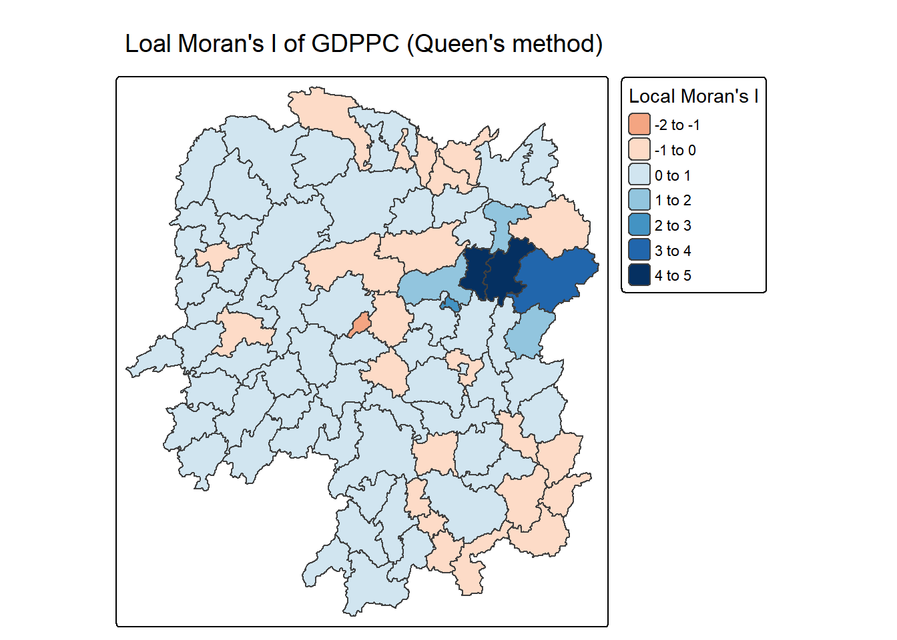
The code chunk below visualises the p-values for better comparsion.
tm_shape(lisa) +
tm_polygons(fill = "p_ii",
fill.scale = tm_scale_intervals(
breaks = c(-Inf, 0.001, 0.01, 0.05, 0.1, Inf),
values = "-brewer.Reds"),
fill.legend = tm_legend(
title = "p-value",
position = tm_pos_out())) +
tm_borders(fill_alpha = 0.5) +
tm_title("p-values of Loal Moran's I of GDPPC (Queen's method)")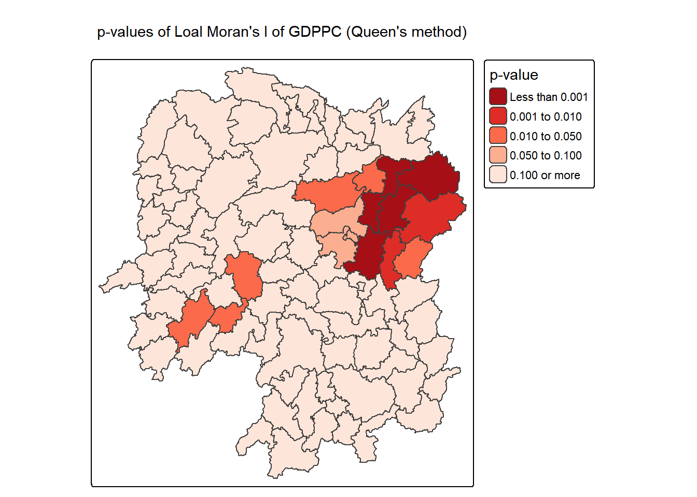
The code chunk below plots the both values side by side.
ii.map <- tm_shape(lisa) +
tm_polygons(fill = "ii",
fill.scale = tm_scale_intervals(
style = "pretty",
n = 5,
values = "brewer.RdBu"),
fill.legend = tm_legend(
title = "Local Moran's I",
position = tm_pos_in(
"left", "bottom"))) +
tm_borders(fill_alpha = 0.5) +
tm_title("Loal Moran's I of GDPPC (Queen's method)")
p_ii.map <- tm_shape(lisa) +
tm_polygons(fill = "p_ii",
fill.scale = tm_scale_intervals(
breaks = c(-Inf, 0.001, 0.01, 0.05, 0.1, Inf),
values = "-brewer.Reds"),
fill.legend = tm_legend(
title = "p-value",
position = tm_pos_in("left", "bottom")
)) +
tm_borders(fill_alpha = 0.5) +
tm_title("p-values of Loal Moran's I of GDPPC (Queen's method)")
tmap_arrange(equal, quantile, ii.map, p_ii.map, asp=1, ncol=2)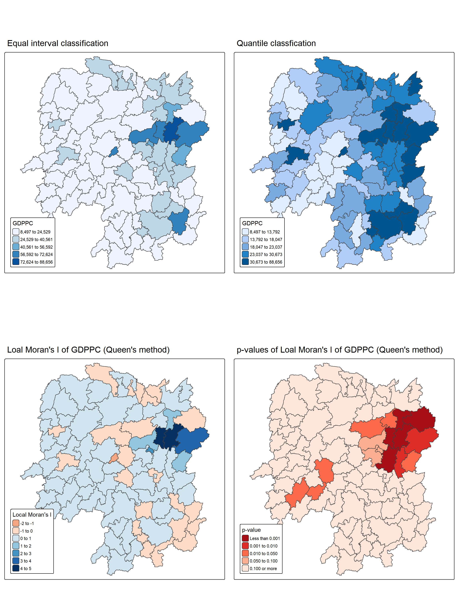
3.5 Preparing and Visualising LISA Map
LISA visualisation highlights spatial patterns such as hot spots, cold spots, and outliers using tools like choropleth maps, Moran scatterplots, and hot spot maps.
A Moran Scatterplot visualises spatial autocorrelation by plotting a variable against its spatial lag, with the slope representing Moran’s I and points indicating clusters or outliers.
The code chunk below uses st_lag() of sfdep package to calculate the spatial lag variable for lisa$GDPPC.
lisa <- lisa %>%
mutate(lag_GDPPC = st_lag(
GDPPC, nb, wt),
.before = 1)%>%
unnest(lag_GDPPC)Then code chunk plots the Moran Scatterplot of GDPPC by using ggplot.
ggplot(data = lisa,
aes(x = GDPPC, y = lag_GDPPC)) +
geom_point() +
geom_smooth( method = "lm", se = FALSE, color = "red") + #linear model
labs (x = "GDPPC", Y = "Spatial Lag of GDPPC",
title = "Morgan Scatterpolot") +
theme_minimal()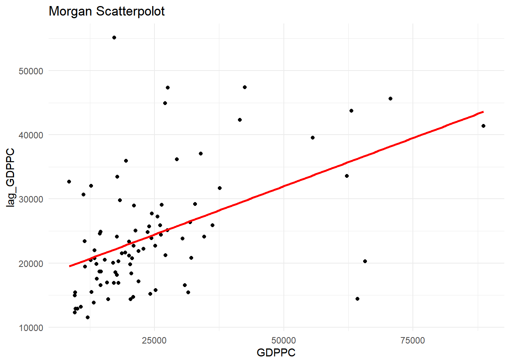
The code below updates the scatterplot with colour coding, where top right quadrant, red points represent regions with high values and high neighbourhood averages (High–High clusters).
ggplot(data = lisa,
aes(x = GDPPC,
y = lag_GDPPC,
color = mean)) +
geom_point(size = 2) +
geom_smooth(method = "lm", #linear model
se = FALSE, # hide confidence intervals
color = "black") +
geom_hline(yintercept=mean(lisa$lag_GDPPC), lty=2) +
geom_vline(xintercept=mean(lisa$GDPPC), lty=2) +
scale_color_manual(
values = c("High-High" = "red",
"Low-Low" = "blue",
"Low-High" = "lightblue",
"High-Low" = "pink")) +
labs(x = "GDPPC",
y = "Spatial Lag of GDPPC",
title = "Moran Scatterplot with LISA Quadrants") +
theme_minimal()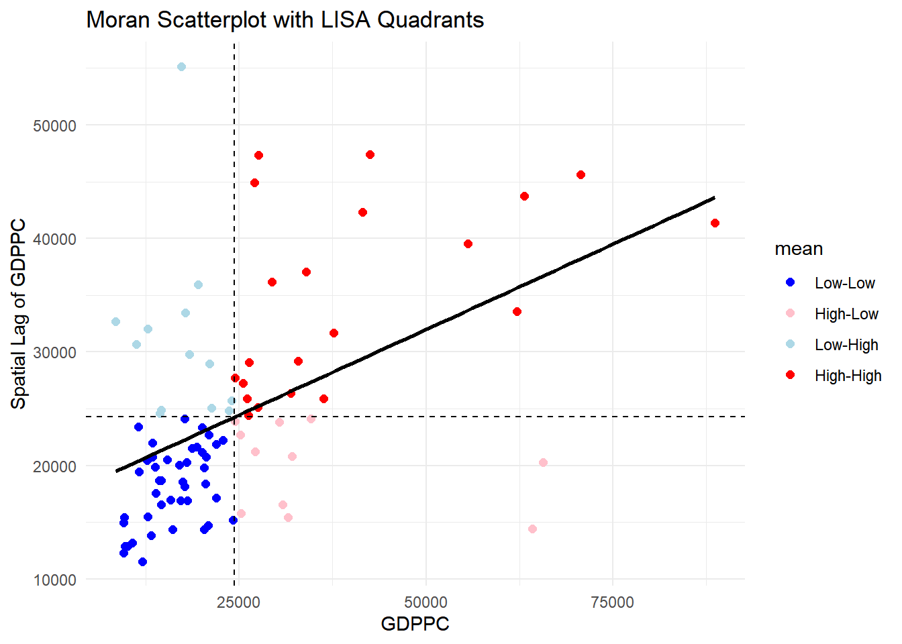
The code chunk below uses scale() to center and scale the GDPPC, centering subtracts the mean (ignoring NAs) from the variables, and scaling divides the result by its standard deviation, converting the values to z-scores.
The function as.vector() goes around the scale() function, to ensure the output is converted to numeric vector from matrix.
The code chunk below plot the Morgan Scatterplot.
ggplot(data = lisa,
aes(x = z_GDPPC,
y = z_lag_GDPPC,
color = mean)) +
geom_point(size = 2) +
geom_smooth(method = "lm",
se = FALSE,
color = "black") +
geom_hline(yintercept=mean(lisa$z_lag_GDPPC), lty=2) +
geom_vline(xintercept=mean(lisa$z_GDPPC), lty=2) +
scale_color_manual(
values = c("High-High" = "red",
"Low-Low" = "blue",
"Low-High" = "lightblue",
"High-Low" = "pink")) +
labs(x = "Standardised GDPPC",
y = "Standardised Spatial Lag of GDPPC",
title = "Standardised Moran Scatterplot with LISA Quadrants") +
theme_minimal()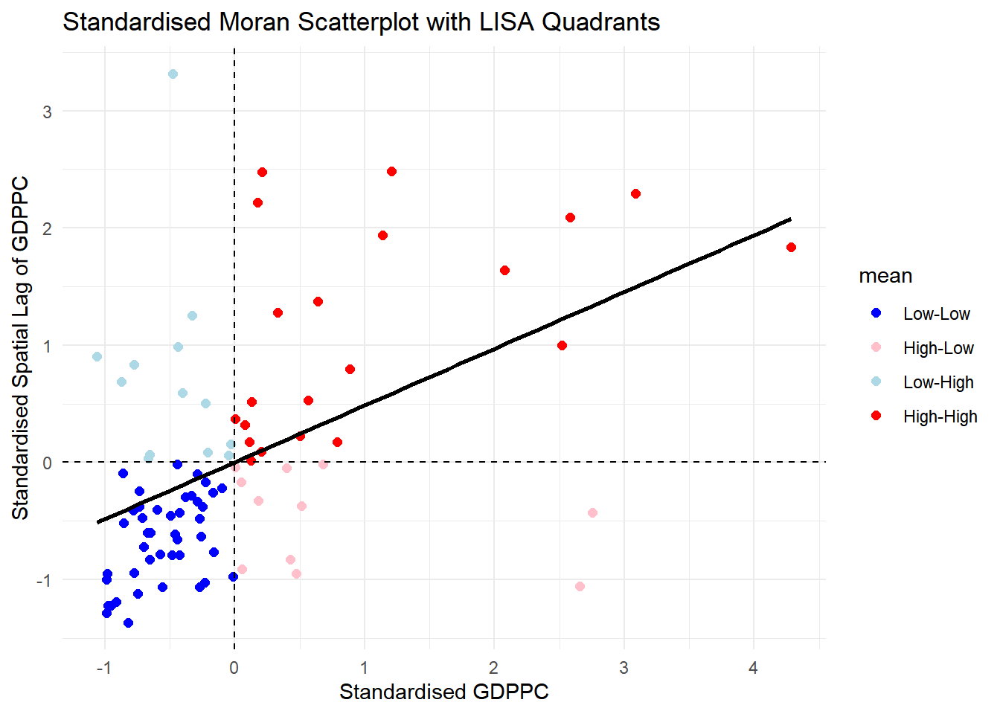
The code chunk below sets a statistical significance level for the local Moran.
signif <- 0.05The code chunk below prepares LISA map by deriving a new field called LISA-cluster from one of the three LISA classes (mean,median, pysal). Only significant regions (p < 0.05) keep their cluster label, others are assigned as “insignificant”. Then clusters are ordered by levels.
lisa <- lisa %>%
mutate(
LISA_cluster = ifelse( p_ii_sim < 0.05, as.character(mean), "Insignificant"),
LISA_cluster = factor( LISA_cluster,
levels = c("Insignificant", "Low-Low", "Low-High", "High-Low", "High-High")))The code chunk below visualises the clusters in the LISA map.
lisa_map <- tm_shape(lisa) +
tm_polygons(
fill = "LISA_cluster",
fill.scale = tm_scale_categorical(
values = c(
"grey80", # Insignificant
"blue", # Low-Low
"lightblue", # Low-High
"pink", # High-Low
"red" # High-High
)
),
fill.legend = tm_legend(
title = "LISA Cluster",
position = tm_pos_in("left", "bottom"))
) +
tm_borders() +
tm_title("Local Moran's I Clusters (p < 0.05)")
tmap_arrange(ii.map,lisa_map, asp=1, ncol=2)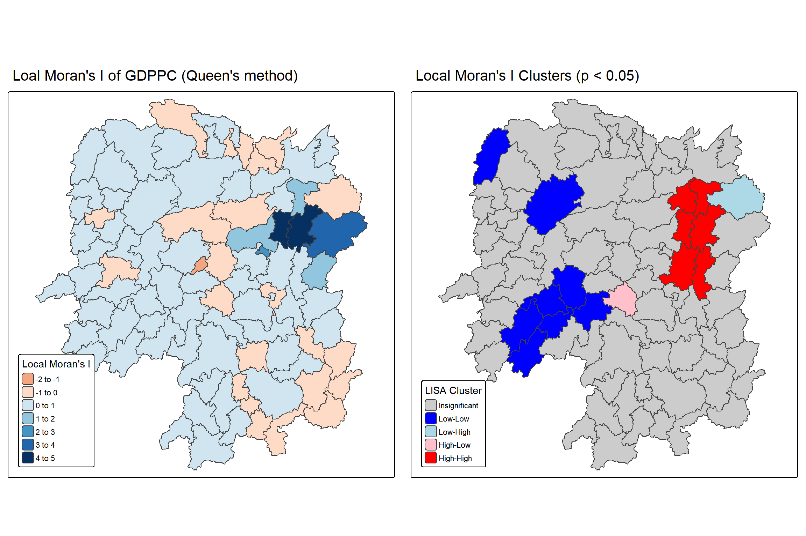
Note
What statistical conclusion can you drawfrom the LISA map above?
At the 95% confidence level, the LISA map shows the eastern–central regions around Chengdu form clustered wealthy areas, while the western–southern counties are identified as least wealthy areas.
4 Hot Spots and Cold Spots Analysis (HCSA)
Hot spot and cold spot analysis (HCSA) identifies statistically significant clusters of high values (hot spots) and low values (cold spots) in spatial data, such as GDP per capita. Hot spots represent prosperous regions where high values cluster together, while cold spots indicate areas of persistent low values. Using statistics like Getis–Ord Gi, HCSA tests whether these patterns are meaningful or due to random chance.
The following four steps are taken:
- Deriving spatial weight matrix
- Computing Gi* statistics
- Mapping Gi* statistics
- Communicating the analysis results
4.1 Deriving Distance Weight Matrix
While spatial autocorrelation often uses shared borders, the Getis–Ord Gi statistic defines neighbours by distance. Common distance-based proximity matrices include fixed distance, adaptive distance, and inverse distance weights.
4.1.1 Computing fixed distance weights
The section uses st_dist_band() and st_weights() of sfdep package to calculate fixed distance weights matrix.
First the code chunk below calculates the upper limit for the distance band by using critical_threshold().
ct <- critical_threshold(st_geometry(hunan))
ct[1] 60799.91Then we apply the derived first nearest neighbour distance 60.80km to the st_dist_band() and along with st_weights() to get the fixed distance matrix.
hunan_fdw <- hunan %>%
mutate(nb = include_self(
st_dist_band(
st_geometry(geometry),
upper = ct)),
wt = st_weights(nb,
style = "W"),
.before = 1)
summary(hunan_fdw$nb)Neighbour list object:
Number of regions: 88
Number of nonzero links: 396
Percentage nonzero weights: 5.113636
Average number of links: 4.5
Link number distribution:
2 3 4 5 6 7
10 11 17 30 15 5
10 least connected regions:
7 30 32 53 56 65 67 71 75 85 with 2 links
5 most connected regions:
12 28 45 50 52 with 7 links Min. 1st Qu. Median Mean 3rd Qu. Max.
0.1429 0.1667 0.2000 0.2222 0.2500 0.5000 Note that for Gi analysis, include_self() must be used to ensure each location includes itself in the neighbourhood definition.
4.1.2 Computing adaptive distance weights
In a fixed distance weight matrix, dense urban areas have many neighbours while rural areas have few, which smooths neighbour relationships unevenly. To control neighbour numbers, k-nearest neighbours can be used (with or without symmetry). Here, we compute a adaptive distance weight matrix using st_knn() and st_weights((http://sfdep.josiahparry.com/reference/st_weights)) from the sfdep package. k=6 is set for easy computation, but we should try out until 15 to find the more accurate k.
hunan_adw <- hunan %>%
mutate(nb = include_self(
st_knn(
st_geometry(geometry),
k = 6)),
wt = st_weights(
nb, style = "W"),
.before = 1)
summary(hunan_adw$nb)Neighbour list object:
Number of regions: 88
Number of nonzero links: 616
Percentage nonzero weights: 7.954545
Average number of links: 7
Non-symmetric neighbours list
Link number distribution:
7
88
88 least connected regions:
1 2 3 4 5 6 7 8 9 10 11 12 13 14 15 16 17 18 19 20 21 22 23 24 25 26 27 28 29 30 31 32 33 34 35 36 37 38 39 40 41 42 43 44 45 46 47 48 49 50 51 52 53 54 55 56 57 58 59 60 61 62 63 64 65 66 67 68 69 70 71 72 73 74 75 76 77 78 79 80 81 82 83 84 85 86 87 88 with 7 links
88 most connected regions:
1 2 3 4 5 6 7 8 9 10 11 12 13 14 15 16 17 18 19 20 21 22 23 24 25 26 27 28 29 30 31 32 33 34 35 36 37 38 39 40 41 42 43 44 45 46 47 48 49 50 51 52 53 54 55 56 57 58 59 60 61 62 63 64 65 66 67 68 69 70 71 72 73 74 75 76 77 78 79 80 81 82 83 84 85 86 87 88 with 7 links Min. 1st Qu. Median Mean 3rd Qu. Max.
0.1429 0.1429 0.1429 0.1429 0.1429 0.1429 4.2 Computing Local Gi*
Local Gi* (Getis–Ord) identifies statistically significant hot and cold spots by comparing neighbourhood values to the global total, producing Z-scores and p-values. In this section, we perform Gi analysis using local_gstar_perm() from the sfdep package. Loacal Gi* should include itself.
Interpretation of Getis-Ord Local Gi*:
High positive Gi* (large z-score): hot spot
High Negative Gi* (large z-score): cold spot
Near zero: independence/randomness
Significance is usually tested with p-values.
set.seed(1234)
HCSA_fdw <- hunan_fdw %>%
mutate(
gistar = local_gstar_perm(
GDPPC, nb, wt, nsim = 99),
.before = 1) %>%
unnest(gistar)4.3 Preparing and Visualising HCSA Map
4.3.1 Mapping Gi* with fix distance weights
The code chunk below plots the distribution of Gi* values.
tm_shape(HCSA_fdw) +
tm_polygons(fill = "gi_star",
fill.scale = tm_scale_intervals(
style = "pretty",
n = 6,
values = "brewer.rd_bu"),
fill.legend = tm_legend(
title = "Gi*",
position = tm_pos_out())) +
tm_borders(fill_alpha = 0.5) +
tm_title("Gi* of GDPPC (Fixed Bandwidth d = 60799.91m)")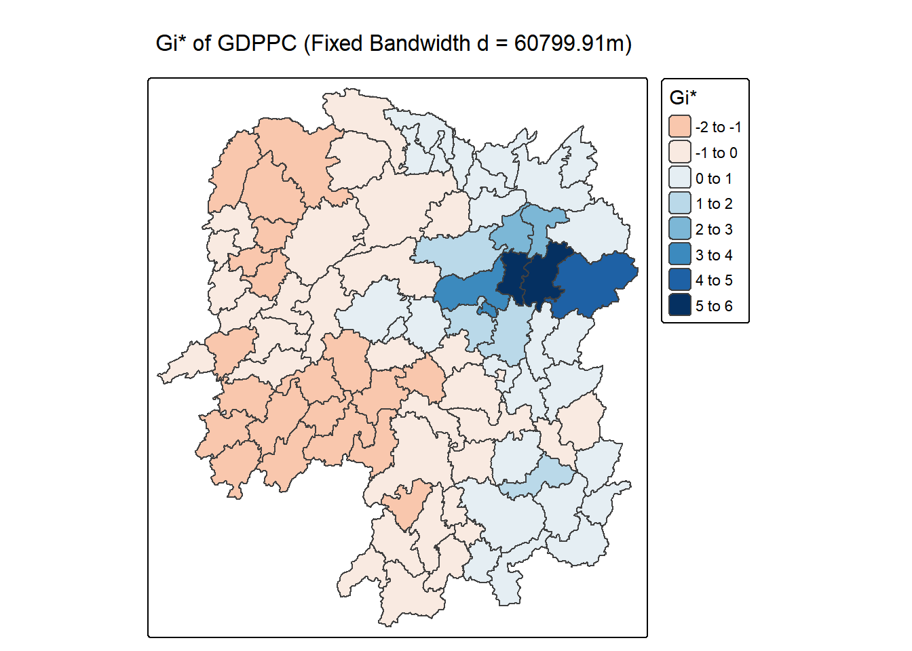
4.3.2 Mapping local Gi* p-values
The code chunk below visualise the p-values.
tm_shape(HCSA_fdw) +
tm_polygons(fill = "p_sim",
fill.scale = tm_scale_intervals(
breaks = c(-Inf, 0.001, 0.01, 0.05, 0.1, Inf),
values = "-brewer.Reds"),
fill.legend = tm_legend(
title = "simulated p-value",
position = tm_pos_out())) +
tm_borders(fill_alpha = 0.5) +
tm_title("p-values of local Gi* of GDPPC (Fixed distance)")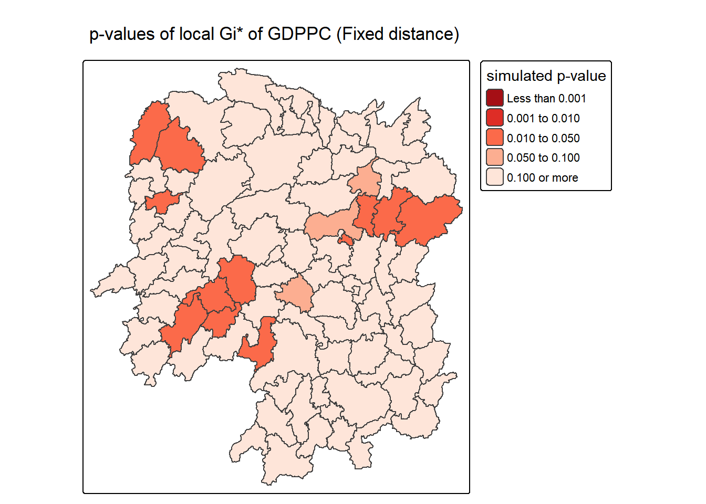
4.3.3 Mapping both Gi* values and p-values
The code chunk below puts the Gi* values and p-values side by side for comparsion.
Gi_star_map <- tm_shape(HCSA_fdw) +
tm_polygons(fill = "gi_star",
fill.scale = tm_scale_intervals(
style = "pretty",
n = 5,
values = "-brewer.rd_bu"),
fill.legend = tm_legend(
title = "local Gi*",
position = tm_pos_in(
"left", "bottom"))) +
tm_borders(fill_alpha = 0.5) +
tm_title("Local Gi* of GDPPC")
p_values_map <- tm_shape(HCSA_fdw) +
tm_polygons(fill = "p_sim",
fill.scale = tm_scale_intervals(
breaks = c(0, 0.001, 0.01, 0.05, 0.1, 1),
values = "-brewer.reds"),
fill.legend = tm_legend(
title = "p-value",
position = tm_pos_in("left", "bottom")
)) +
tm_borders(fill_alpha = 0.5) +
tm_title("p-values of local Gi* of GDPPC (fixed distance)")
tmap_arrange(Gi_star_map, p_values_map, asp=1, ncol=2)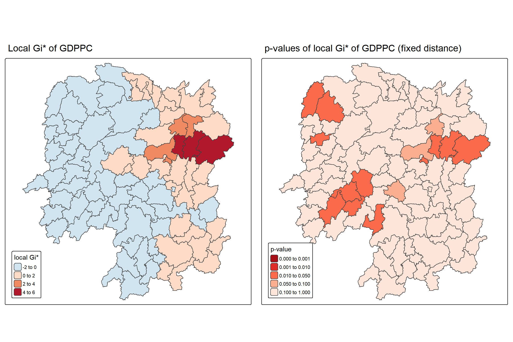
4.3.4 Plotting and Visualising HCSA Map
The code chunk below derive the HCSA_cluster column by labelling the p-values from simulation p_sim.
HCSA_fdw <- HCSA_fdw %>%
mutate(HCSA_cluster = case_when(
p_sim > 0.05 ~ "Insignificant",
p_sim <= 0.05 & cluster == "High" ~ "Hot spot",
p_sim <= 0.05 & cluster == "Low" ~ "Cold spot",
TRUE ~ "Other"),
HCSA_cluster = factor(
HCSA_cluster,
levels = c("Insignificant", "Hot spot", "Cold spot")
),
.before = 1
)The code chunk below plots the HCSA map and adds the Gi* value map to its side for comparsion.
HCSA_map <- tm_shape(HCSA_fdw) +
tm_polygons(
fill = "HCSA_cluster",
fill.scale = tm_scale_categorical(
values = c(
"grey80", # Insignificant
"red", # Low-Low
"blue" # High-High
)
),
fill.legend = tm_legend(
title = "HSCA Cluster",
position = tm_pos_in("left", "bottom"))
) +
tm_borders() +
tm_title("HCSA Clusters (p < 0.05)")
tmap_arrange(Gi_star_map, HCSA_map, asp=1, ncol=2)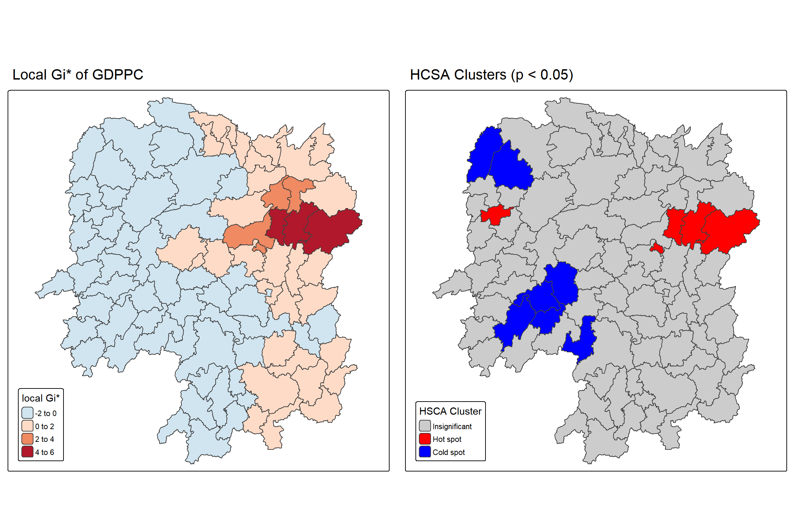
Note
What statistical conclusion can you draw from the HCSA map above?
At the 95% confidence level, HCSA map shows hot spots of high GDP per capita in the eastern–central counties and cold spots of low GDP per capita in the western–southern counties.
5 Plotting Summary
Both Local Moran’s I (LISA) and Hot Spot/Cold Spot Analysis (HCSA) reveal similar spatial patterns of GDPPC in Hunan. LISA identifies hot clusters in the eastern–central counties and cold clusters in the western–southern counties, while also detecting spatial outliers (e.g.low surrounded by high and/or high surrounded by low). HCSA confirms the same hot spots and cold spots, but focuses only on statistically significant clustering, without distinguishing outliers. Thus, LISA provides finer diagnostic detail, whereas HCSA highlights the most robust clusters. There is high possibility to observe overlapped hot spots in LISA and HCSA, but there might not be sthe ame for cold spots since the methods are different.
The code chunk below shows the LISA map and HCSA map together.
tmap_arrange(lisa_map, HCSA_map, asp=1, ncol=2)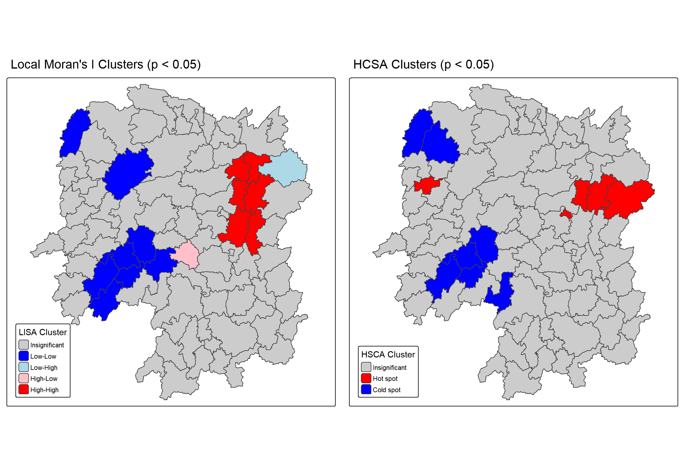
6 Reference
Kam, T. S. 8 Spatial Weights and Applications. R for Geospatial Data Science and Analytics. https://r4gdsa.netlify.app/chap10